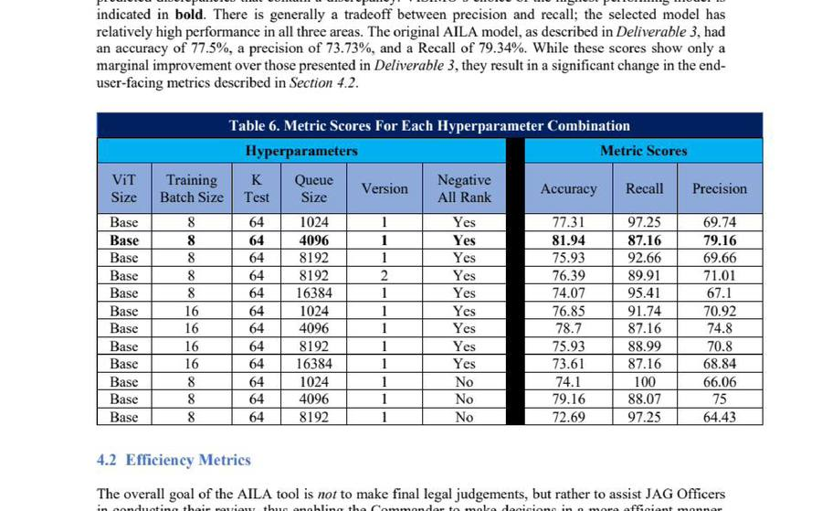
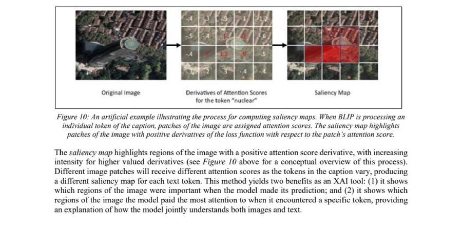
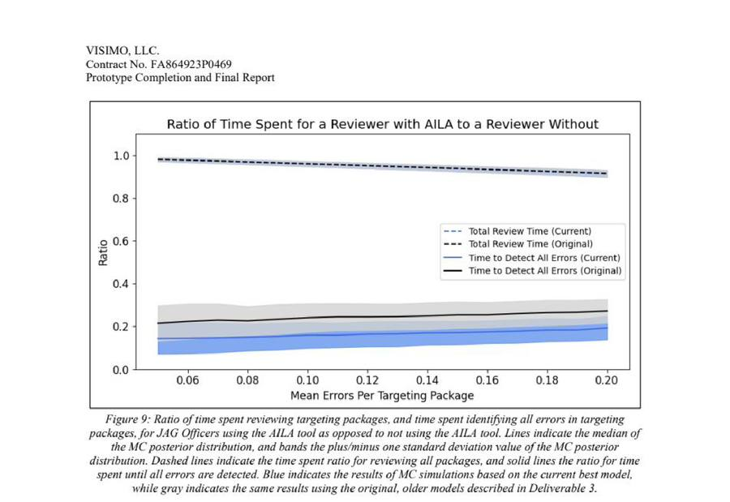

What is AILA?
AILA is an AI-powered tool designed to assist Judge Advocate General (JAG) Officers during the deliberate military targeting process. It uses multi-modal machine learning to screen targeting packages — collections of imagery and accompanying text descriptions — for errors, mismatches, and legally significant discrepancies.
AILA helps JAG Officers prioritize their review workload more efficiently, identifying packages that require close scrutiny before they reach a Commander's decision point. It is designed to assist, not replace, human legal judgment.
The Deliberate Targeting Review Problem
During the deliberate targeting process, JAG Officers must review targeting packages to ensure they meet legal justification thresholds, particularly regarding collateral damage and the accuracy of intelligence. A targeting package typically contains imagery, textual descriptions, and supporting documentation.
Errors in a targeting package — for example, a hospital visible in an image but not noted in the accompanying text — can significantly alter a Commander's decision. This review is time-consuming and often conducted under time-constrained conditions.
AILA was designed to automate the initial screening of these packages, flagging discrepancies before they reach a JAG Officer's desk and enabling more efficient prioritization of review effort.
Models, Data, and Explainability
Dataset
A synthetic dataset was constructed containing four primary target categories, covering the majority of targets encountered during deliberate targeting. The team conducted a bias investigation to ensure model consistency across subgroups, manually annotating images with descriptive features and partitioning data to check for disproportionate performance.
AI Models
BLIP (Bootstrapping Language-Image Pre-training) was adopted as the primary model architecture. BLIP is a dual vision-text encoder that processes image-caption pairs and predicts whether they match. The modeling approach evolved during the project from separate vision and text pipelines to a unified dual encoder, improving performance at some cost to standalone interpretability.
milBERT, a military-domain-specific text encoder, was explored as an alternative and complement for encoding the textual components of targeting packages.

Explainable AI
Because warfighters and legal experts must understand and trust model outputs, AILA incorporated three explainability methods:
- Saliency Maps — highlight which image regions most influenced each prediction by computing derivatives of attention scores for individual caption tokens.
- LIME Explanations — identify which words in a caption most contributed to a match or mismatch prediction, visualized as a weighted bar chart for the end user.
- Image Registers — support alignment and contextual comparison of image content across targeting packages.

Performance and Efficiency
- All primary project objectives were completed successfully.
- BLIP achieved 81.94% accuracy, 87.16% recall, and 79.16% precision on the synthetic targeting package dataset.
- Data scaling studies showed the model achieves approximately 70% accuracy with as few as 500 training samples, demonstrating adaptability to data-limited domains.
- AILA is projected to increase the rate at which JAG Officers detect errors in targeting packages by a factor of at least 4, approaching a 10-fold increase at low discrepancy rates.
- End-user testing and stakeholder interviews validated the workflow and surfaced features valuable to JAG Officers.

Prototype Successfully Delivered
The AILA project successfully delivered a functional prototype capable of screening standard targeting packages for errors. The shift from separate vision/text pipelines to BLIP required a compensating investment in explainability methods to maintain user trust. The prototype is ready for further development and operational testing with JAG Officers. AILA's architecture is also demonstrably adaptable to domains beyond the JAG workflow, with strong performance achievable on limited data.
Next Steps
DoD IL5 Deployment
Migrate AILA to Azure Government (DoD IL5, FedRAMP High P-ATO). Requires completing ATO process including RAR, SAP, SAR, and POA&M documentation.
Modeling Improvements
Integrate milBERT for stronger military-language performance. Evaluate InstructBLIP and multi-modal LLMs (MLLMs) as next-generation architecture candidates.
Broader Applicability
Adapt AILA's image-caption discrepancy core to Battle Damage Assessment (BDA) and other DoD error-detection use cases across service branches.